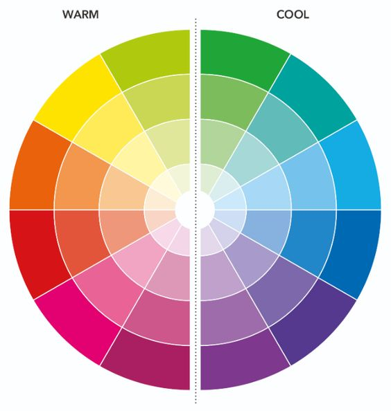

Kylie Jenner's Stunning Met Gala Look

Jenner wore a custom-made Jean Paul Gaultier piece: a red-hot gown with an asymmetrical neckline, a thigh-high leg slit, and a train that doubled as a shiny cornflower blue cape when worn wrapped around her shoulders. She finished the look off with red pumps and diamond stud earrings.
Prior to that, Jenner made back-to-back fabulous appearances during Paris Fashion Week. For instance, she sat front row at the Jean Paul Gaultier haute couture show.
The mom-of-two turned heads when she stepped onto the famed carpeted steps of the Metropolitan Museum of Art, where the theme this year pays homage to the late legendary designer Karl Lagerfeld.
The beginner's guide to colour theory

When it comes to colouring and art, colour is extremely important. Nobody wants a dull creation, after all! Even if you're getting creative just for relaxation or fun, it's worth getting your head around a bit of colour theory to get the effect that you're looking for. We all know what it's like when you picture something in your head, but you just can't quite transfer it to your work. Colour theory can help!
So what exactly is colour theory? It's the guidelines surrounding colour and colour pairings that are used globally by artists. They help to inform colour schemes and the message that you're trying to convey through your work, so it's pretty important to have a basic grasp of the key areas of colour theory.
The colour wheel helps you make sense of which colours go together and is whats behind any harmonious colour scheme.
Contour like Madison Beer!
Makeup is not based on your skin appearance, but according to your bone appearance, and finally achieves modifying the shortcomings of your face, so that your advantages are magnified, and the overall look is more attractive.
So, we need to understand our facial features and shortcomings, and then learn makeup methods as needed.
Therefore, the purpose of our makeup is to shorten the face, especially the length of the atrium, and at the same time brighten the nose to make the nose look taller.
Blush under the eyes, which needs to be swept horizontally with a brush, can visually shorten the atrium and look younger.